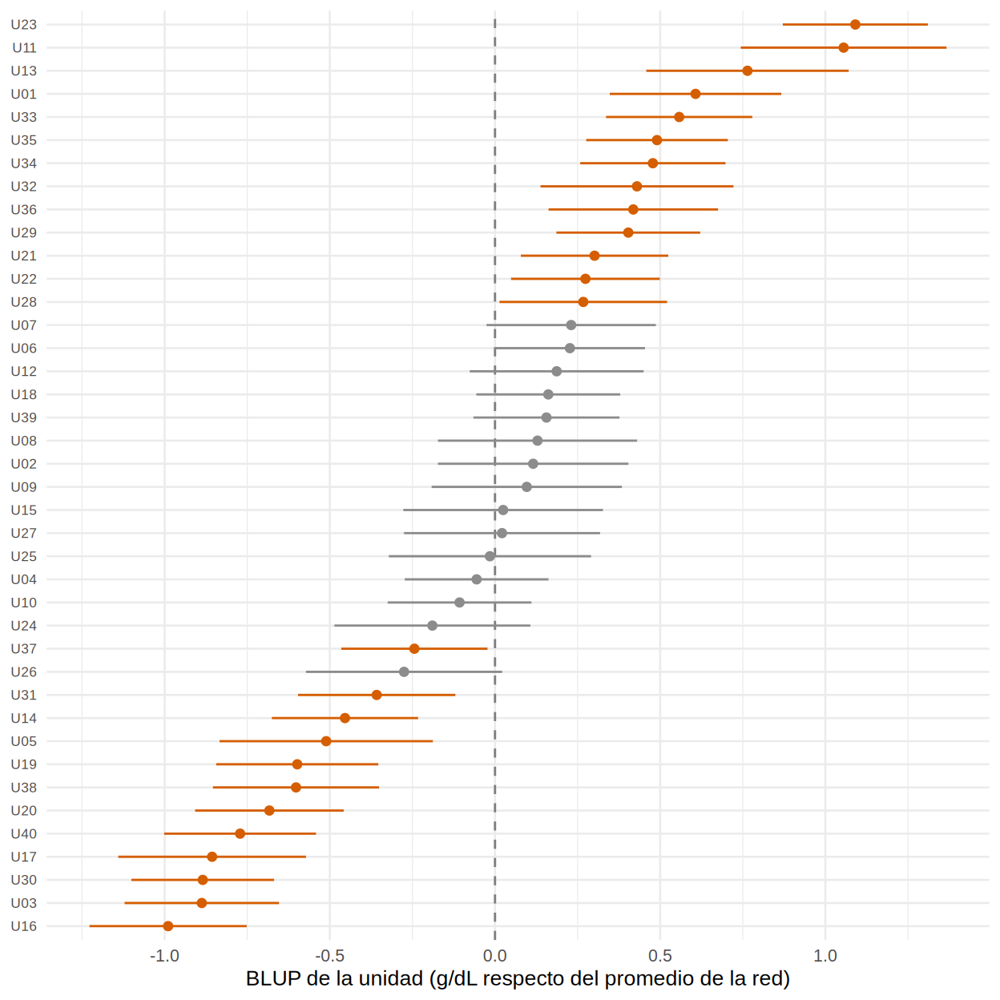
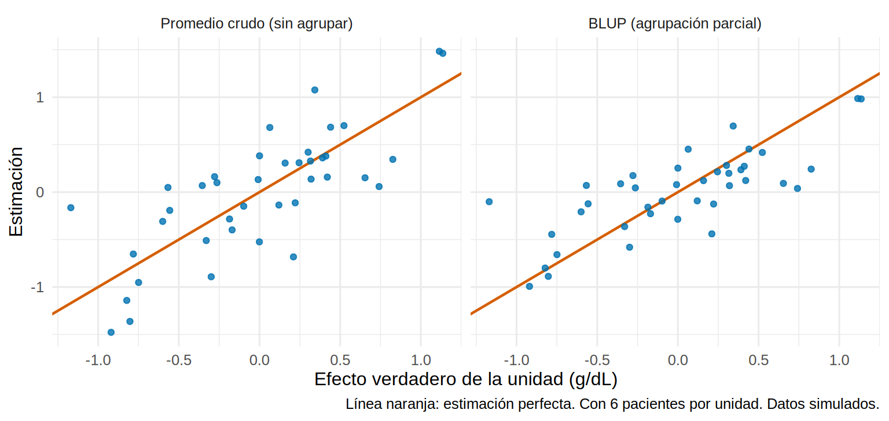

Efectos aleatorios: pacientes dentro de unidades de diálisis
Nota🩺 Escenario
La gerencia de tu red de diálisis quiere un ranking de sus 40 unidades según la hemoglobina de sus pacientes y la tasa de hospitalización: “las tres peores recibirán una auditoría”. Una unidad con solo 25 pacientes aparece entre las últimas. ¿Es una mala unidad o tuvo mala suerte con sus pacientes? ¿Y cuánto de la variabilidad de la hemoglobina se debe a la unidad, y cuánto al paciente? Los efectos aleatorios responden ambas preguntas.
Lo que vamos a hacer
Ajustar un modelo con intercepto aleatorio y calcular el ICC en dos y en tres niveles.
Obtener el efecto de cada unidad (BLUP) y entender la contracción (shrinkage) que lo hace más confiable que el promedio crudo.
Evaluar un ranking de centros con honestidad (incertidumbre del rango) y separar el efecto dentro del entre unidades.
Datos simulados (hd_unidades). Conocemos la verdad: la desviación estándar del efecto aleatorio de unidad es 0.35 g/dL (la de paciente, 0.80, y la residual mes a mes, 0.65).
Paso 1. El modelo con intercepto aleatorio y el ICC
Un modelo de regresión normal supone que todos los pacientes parten del mismo punto (el intercepto). El modelo de efectos mixtos permite que cada unidad (y cada paciente) tenga su propio intercepto, sacado de una distribución normal centrada en el promedio:
donde \(u_j\) es el efecto de la unidad \(j\), \(b_{ij}\) el del paciente \(i\) dentro de ella y \(\varepsilon\) la variabilidad mes a mes. Se llaman efectos aleatorios porque no estimamos un parámetro para cada unidad como si fuera independiente, sino una desviación estándar que describe cuánto varían las unidades entre sí. Los efectos fijos (\(\beta_0\) y, luego, los coeficientes de las covariables) son los promedios poblacionales.
En lme4, (1 | unidad) significa “un intercepto aleatorio por unidad” y (1 | id) “uno por paciente”. Como cada paciente tiene su identificador único, no hace falta escribir unidad/id:
library(tidyverse)library(lme4)library(lmerTest)library(broom.mixed)source("R/funciones_epi.R")source("R/funciones_extra_a.R")source("R/funciones_extra_cap14.R")theme_set(theme_minimal(base_size =12))pac<-read_csv("Bases/hd_unidades.csv", show_col_types =FALSE)oraculo<-read_csv("Bases/hd_unidades_oraculo_unidades.csv", show_col_types =FALSE)hbl<-read_csv("Bases/hd_unidades_hb.csv", show_col_types =FALSE)|>left_join(pac, by =c("id", "unidad"))|>group_by(unidad)|>mutate(edad_media =mean(edad), # edad media de la unidad (característica de la unidad) edad_dentro =edad-edad_media)|># edad del paciente respecto de la de su unidadungroup()## Modelo "vacío": solo el promedio y los interceptos aleatoriosm0<-lmer(hb~1+(1|unidad)+(1|id), data =hbl)vc<-as.data.frame(VarCorr(m0))[, c("grp", "vcov", "sdcor")]vc|>mutate(across(where(is.numeric), \(x)round(x, 3)))
Las varianzas (vcov) dicen cuánta variabilidad de la hemoglobina hay en cada nivel: entre unidades (unidad), entre pacientes de una misma unidad (id) y de un mes a otro dentro de cada paciente (Residual). Con ellas se calculan dos ICC:
v<-setNames(vc$vcov, vc$grp)icc_unidad<-v["unidad"]/sum(v)# correlación entre dos pacientes de la misma unidadicc_paciente<-(v["unidad"]+v["id"])/sum(v)# correlación entre dos meses del mismo pacienteround(c(icc_unidad =unname(icc_unidad), icc_mismo_paciente =unname(icc_paciente)), 3)
icc_unidad icc_mismo_paciente
0.175 0.777
Qué vemos. (La desviación estándar de unidad sale mayor que la verdad, 0.35, porque este modelo vacío aún no incluye características de la unidad como la intervención, el tipo de unidad o la edad media de sus pacientes; en el Paso 6 baja a la cifra correcta.)
ICC de unidad = 0.17: el 17 % de la variabilidad de la hemoglobina mensual se explica por la unidad en que se dializa el paciente. Dos pacientes elegidos al azar de una misma unidad tienen una correlación de ~0.17: poco, pero con unidades de 45 pacientes ya basta para inflar la varianza varias veces (14.1).
ICC de paciente = 0.78: dos mediciones mensuales del mismo paciente se parecen mucho (correlación 0.78). La mayor parte de la variación está entre pacientes, no entre meses.
Si prefieres que el paquete lo haga, performance::icc(m0, by_group = TRUE) devuelve el ICC de cada nivel por separado: el de la unidad es el mismo (0.175) y el de id (0.602) es la parte que corresponde solo al paciente; sumados dan el ICC “del mismo paciente” de arriba:
# ICC by Group
Group | ICC
--------------
id | 0.602
unidad | 0.175
Los intervalos de confianza de las desviaciones estándar se obtienen por verosimilitud perfilada (tarda unos segundos). .sig01 es la desviación del paciente, .sig02 la de la unidad y .sigma la residual:
Paso 2. ¿Efecto fijo o aleatorio para la unidad? Tres formas de estimar
Para estimar cuánto se desvía una unidad del promedio hay tres opciones:
Sin agrupar (no pooling): su promedio crudo. Es el efecto “fijo” de la unidad. Usa solo los datos de esa unidad: preciso si hay muchos pacientes, ruidoso si hay pocos.
Agrupación completa (complete pooling): ignorar la unidad y usar el promedio de todos. Estable, pero ciega a las diferencias reales.
Agrupación parcial (partial pooling): el modelo de efectos aleatorios. Es un promedio ponderado entre las dos anteriores:
donde \(n_j\) es el número de pacientes de la unidad y \(\sigma_{\text{error}}^2\) la variabilidad entre pacientes. El factor \(\lambda_j\) (entre 0 y 1) es el peso que se da al dato propio de la unidad: con muchos pacientes \(\lambda_j \to 1\) (confiamos en su promedio); con pocos, \(\lambda_j \to 0\) (el estimado se “contrae” hacia el promedio de todas). A este estimado se le llama BLUP (best linear unbiased predictor; en rigor, un predictor, no un estimador, porque \(u_j\) es una variable aleatoria).
Paso 3. Los BLUP de cada unidad (ajustando por el perfil de pacientes)
Un ranking justo compara a las unidades a igualdad de pacientes (case-mix): una unidad con más diabéticos y catéteres tendrá menos hemoglobina sin ser peor. Ajustamos por las características del paciente (sexo, diabetes, catéter, albúmina y edad dentro de la unidad) y dejamos que unidad capte el resto:
m_ben<-lmer(hb~sexo+dm+cateter+I(albumina-3.7)+edad_dentro+(1|unidad)+(1|id), data =hbl)# BLUP de cada unidad con su incertidumbre (error estándar condicional)ef_unidad<-tidy(m_ben, effects ="ran_vals", conf.int =TRUE)|>filter(group=="unidad")|>transmute(unidad =level, estimado =estimate, ee =std.error, ic_inf =conf.low, ic_sup =conf.high)ef_unidad|>arrange(estimado)|>slice(c(1:3, (n()-2):n()))|>mutate(across(where(is.numeric), \(x)round(x, 2)))
Las 3 unidades con más hemoglobina “de más” (arriba) y las 3 con menos (“de menos”), en g/dL respecto del promedio. Un gráfico de oruga (caterpillar plot) muestra a las 40 unidades con su intervalo de confianza del 95 %; en naranja, las que no cruzan el cero:
ef_unidad|>transmute(etiqueta =unidad, estimado, ic_inf, ic_sup)|>oruga(etiqueta_x ="BLUP de la unidad (g/dL respecto del promedio de la red)")

Qué vemos. 25 de las 40 unidades tienen un intervalo que no incluye el cero: en este conjunto simulado las diferencias entre unidades son grandes (desviación de 0.53 g/dL entre BLUP) frente a la incertidumbre de cada una. Parte de esa diferencia no es “calidad”: la intervención, el tipo de unidad y la edad promedio de sus pacientes son características de la unidad (Pasos 6 y 14.5).
¿Qué tan bien recuperan la verdad? (y la contracción)
Como conocemos el efecto verdadero de cada unidad (efecto_unidad_hb en el oráculo), comparamos tres estimaciones: el promedio crudo (“sin agrupar”), el efecto fijo ajustado por el perfil de pacientes (una constante por unidad en lm) y el BLUP. Lo medimos por la raíz del error cuadrático medio (RMSE; menor es mejor):
centrar<- \(x)x-mean(x)crudo<-hbl|>group_by(unidad)|>summarise(n =n_distinct(id), crudo =mean(hb))|>mutate(crudo =centrar(crudo))mf<-lm(hb~0+unidad+sexo+dm+cateter+I(albumina-3.7)+edad_dentro, data =hbl)fijo<-tibble(unidad =sub("unidad", "", grep("^unidad", names(coef(mf)), value =TRUE)), fijo =centrar(coef(mf)[grep("^unidad", names(coef(mf)))]))comp<-oraculo|>mutate(verdad =centrar(efecto_unidad_hb))|>left_join(crudo, by ="unidad")|>left_join(fijo, by ="unidad")|>left_join(ef_unidad|>mutate(blup =centrar(estimado))|>select(unidad, blup), by ="unidad")rmse<- \(x, v)sqrt(mean((x-v)^2))c(crudo =rmse(comp$crudo, comp$verdad), fijo_ajustado =rmse(comp$fijo, comp$verdad), BLUP =rmse(comp$blup, comp$verdad))|>round(3)
crudo fijo_ajustado BLUP
0.134 0.122 0.117
Con 25-60 pacientes por unidad y 12 meses cada uno, las tres estimaciones están muy cerca de la verdad (RMSE de 0.134 el crudo, 0.122 el fijo ajustado y 0.117 el BLUP): hay datos de sobra. La ventaja del modelo aleatorio aparece cuando cada unidad aporta pocos pacientes. Simulemos que cada unidad hubiera reportado solo 6 pacientes al azar:
set.seed(142)pocos<-pac|>group_by(unidad)|>slice_sample(n =6)|>ungroup()hb_p<-hbl|>semi_join(pocos, by ="id")m_p<-lmer(hb~1+(1|unidad)+(1|id), data =hb_p)est_p<-tibble(unidad =rownames(ranef(m_p)$unidad), blup =ranef(m_p)$unidad[, 1])|>left_join(hb_p|>group_by(unidad)|>summarise(crudo =mean(hb)), by ="unidad")|>mutate(crudo =centrar(crudo), blup =centrar(blup))|>left_join(oraculo|>transmute(unidad, verdad =centrar(efecto_unidad_hb)), by ="unidad")c(RMSE_crudo =rmse(est_p$crudo, est_p$verdad), RMSE_BLUP =rmse(est_p$blup, est_p$verdad), DE_crudo =sd(est_p$crudo), DE_BLUP =sd(est_p$blup), DE_verdad =sd(est_p$verdad))|>round(2)
Con 6 pacientes por unidad, los promedios crudos varían demasiado (DE 0.66 frente a 0.55 real: parte de lo que vemos es ruido) y el BLUP, que los contrae hacia el promedio, queda más cerca de la verdad (RMSE 0.35 frente a 0.42). Se ve en el gráfico:
est_p|>pivot_longer(c(crudo, blup), names_to ="metodo", values_to ="estimado")|>mutate(metodo =factor(metodo, levels =c("crudo", "blup"), labels =c("Promedio crudo (sin agrupar)", "BLUP (agrupación parcial)")))|>ggplot(aes(verdad, estimado))+geom_abline(slope =1, intercept =0, color ="#D55E00", linewidth =0.8)+geom_point(color ="#0072B2", alpha =0.8)+facet_wrap(~metodo)+labs(x ="Efecto verdadero de la unidad (g/dL)", y ="Estimación", caption ="Línea naranja: estimación perfecta. Con 6 pacientes por unidad. Datos simulados.")

Qué vemos. Los puntos del panel izquierdo (crudo) se dispersan mucho alrededor de la diagonal, sobre todo en los extremos; los del BLUP caen más cerca y ligeramente “comprimidos” hacia el centro. Esa contracción es el precio justo que se paga por usar la información de todas las unidades para estimar cada una: las unidades pequeñas se contraen más que las grandes. Si tuvieras que auditar a las “peores” por el crudo, auditarías unidades que fueron solo desafortunadas.
Paso 4. El ranking también es incierto
Un ranking por BLUP parece exacto (la posición 1, 2, 3…). Pero cada BLUP tiene su error estándar: podemos simular muchos rankings posibles sacando cada BLUP de su distribución (2 000 veces) y viendo entre qué posiciones cae cada unidad:
La unidad con menos hemoglobina (rango 1) podría, con la incertidumbre, estar en realidad entre las posiciones 1 y 5; las de en medio tienen intervalos de rango mucho más amplios (hasta 18 posiciones de amplitud). Un ranking publicado sin estos intervalos da una falsa sensación de precisión.
Paso 5. ¿El efecto de un predictor cambia de una unidad a otra? Pendiente aleatoria
Hasta aquí solo el intercepto variaba entre unidades. Un modelo más flexible deja que el efecto de una covariable también varíe: p. ej., que el efecto del catéter sobre la hemoglobina sea distinto en cada unidad. Eso es una pendiente aleatoria. Se prueba comparando los dos modelos con una prueba de razón de verosimilitud:
m_pend<-lmer(hb~sexo+dm+cateter+I(albumina-3.7)+edad_dentro+(1|id)+(1+cateter||unidad), data =hbl)anova(m_pend, m_ben, refit =FALSE)
(1 + cateter || unidad) permite que el catéter tenga una pendiente propia en cada unidad (|| evita estimar la correlación entre intercepto y pendiente, lo que simplifica el modelo). El valor p (0.23) no apoya una pendiente aleatoria: no hay evidencia de que el efecto del catéter sea distinto entre unidades. Es lo esperable: en la simulación el efecto es el mismo en todas (−0.35 g/dL). Si lo hubiera, cada unidad tendría un efecto propio y el efecto fijo sería solo el promedio. (Es la secuencia que sigue el material del autor: modelo vacío → modelo con efectos fijos → pendiente aleatoria si mejora el ajuste.)
Paso 6. Dentro vs. entre en un modelo mixto
En 14.1 vimos que la edad tiene un efecto dentro de las unidades (−0.030 g/dL/año) y otro entre unidades (+0.040). En un modelo mixto, si metes la edad “cruda” mezclas ambos. La solución (modelo de Mundlak o de within-between) es separar la edad en dos variables: la edad del paciente respecto de la media de su unidad y la edad media de la unidad:
Primero, ¿están balanceadas las unidades de ambos brazos en edad media? (la intervención se asignó al azar, pero con solo 40 unidades el azar no garantiza balance):
## (A) edad cruda: mezcla los dos nivelesmA<-lmer(hb~intervencion+tipo_unidad+sexo+dm+cateter+I(albumina-3.7)+edad+(1|unidad)+(1|id), data =hbl)## (B) edad separada en "dentro" y "entre" (Mundlak)mB<-lmer(hb~intervencion+tipo_unidad+sexo+dm+cateter+I(albumina-3.7)+edad_dentro+I(edad_media-64)+(1|unidad)+(1|id), data =hbl)tab<-bind_rows(tidy(mA, effects ="fixed")|>filter(term%in%c("intervencion", "edad"))|>mutate(modelo ="A: edad cruda"),tidy(mB, effects ="fixed")|>filter(term%in%c("intervencion", "edad_dentro", "I(edad_media - 64)"))|>mutate(modelo ="B: dentro y entre"))|>select(modelo, term, estimate, std.error)|>mutate(across(where(is.numeric), \(x)round(x, 3)))tab
# A tibble: 5 × 4
modelo term estimate std.error
<chr> <chr> <dbl> <dbl>
1 A: edad cruda intervencion 0.585 0.193
2 A: edad cruda edad -0.029 0.002
3 B: dentro y entre intervencion 0.401 0.13
4 B: dentro y entre edad_dentro -0.03 0.002
5 B: dentro y entre I(edad_media - 64) 0.048 0.011
Qué vemos.
En el modelo B, el efecto dentro de la edad es -0.030 (verdad −0.030) y el efecto entre unidades 0.048 (verdad +0.040): recuperados. En el modelo A hay una sola cifra (-0.029) que describe al paciente pero oculta que las unidades con población más añosa tienen más hemoglobina.
Esa edad media de la unidad estaba confundiendo la intervención: por azar, las unidades con protocolo atienden a pacientes algo más añosos (tabla de arriba). El efecto de la intervención pasa de 0.58 (A) a 0.40 (B), que coincide con la verdad (+0.40), y la varianza entre unidades baja de 0.36 a 0.14. Una covariable de la unidad que no se incluye acaba en el efecto aleatorio, y el efecto aleatorio se supone independiente de las covariables: cuando no lo es, el modelo puede sesgar.
Paso 7. Con un desenlace binario: hospitalización
Para un desenlace 0/1 el modelo es una regresión logística mixta (glmer(..., family = binomial)). El intercepto aleatorio actúa sobre el logit del riesgo, y el ICC se calcula con la varianza latente de la distribución logística, \(\pi^2/3 \approx 3.29\):
g0<-glmer(hospitalizado~1+(1|unidad), data =pac, family =binomial)s2_u<-as.numeric(VarCorr(g0)$unidad)# varianza del intercepto aleatorio (escala logit)icc_hosp<-s2_u/(s2_u+pi^2/3)# ICC "latente"mor<-exp(sqrt(2*s2_u)*qnorm(0.75))# razón de odds mediana (MOR)round(c(varianza_unidad =s2_u, ICC =icc_hosp, MOR =mor), 3)
varianza_unidad ICC MOR
0.424 0.114 1.860
Qué vemos. El ICC de hospitalización es 0.11: el 11 % de la variabilidad (en escala logit) corresponde a la unidad (la verdad simulada es 0.13). Una medida más clínica es la razón de odds mediana (MOR, median odds ratio): si tomas dos pacientes idénticos en dos unidades al azar, la mediana de la razón entre las odds del que está en la unidad de más riesgo y las del otro es 1.86. Es decir, cambiar de unidad multiplica por ~1.9 las odds de hospitalización del mismo paciente, un efecto grande, de la magnitud de los factores de riesgo clínicos más importantes. Esa es la magnitud del efecto unidad en el resultado clínico.
Advertencia⚠️ Trampas frecuentes
Rankear con el promedio crudo o con BLUP sin su incertidumbre: las unidades pequeñas aparecen en los extremos por puro azar. Usa BLUP (que contrae) y presenta intervalos o intervalos de rango.
Efectos aleatorios con pocas unidades. Con menos de ~10 unidades la desviación estándar entre unidades se estima muy mal; en ese caso trata unidad como efecto fijo (si no hay variables de unidad que estimar) o usa errores robustos con corrección para pocos conglomerados (14.5).
Olvidar que el efecto aleatorio supone independencia de las covariables. Si una variable del paciente (edad, albúmina) tiene un promedio distinto en cada unidad, separa el dentro del entre (Paso 6).
Tip💡 Qué leer en la salida de lmer
Random effects: aquí están las varianzas de cada nivel. Una varianza (o DE) cercana a cero y el aviso boundary (singular) fit indican que ese efecto aleatorio no hace falta.
Fixed effects: los coeficientes son promedios poblacionales, interpretables como en cualquier regresión, ajustados por unidad.
Con lmerTest, summary() da p y grados de libertad por el método de Satterthwaite; para otros métodos (Kenward-Roger) usa summary(modelo, ddf = "Kenward-Roger").
Para la correlación entre intercepto y pendiente aleatorios usa (1 + x | unidad); sin ella, (1 + x || unidad).
Importante🎯 En resumen
Un modelo mixto da a cada unidad (y paciente) su propio intercepto, sacado de una distribución normal: se estima una varianza, no un parámetro por unidad.
El ICC (0.17 para la unidad, 0.78 para el mismo paciente) dice cuánto de la variabilidad pertenece a cada nivel.
Los BLUP son efectos de unidad contraídos hacia el promedio; con pocos pacientes por unidad recuperan mejor la verdad que el promedio crudo (RMSE 0.35 vs. 0.42 con 6 pacientes).
Un ranking de centros debe ir con incertidumbre y ajuste por casuística.
Para predictores del paciente con medias distintas por unidad, separa dentro y entre (Mundlak): corrige la confusión por características de unidad.
Con desenlace binario, glmer y el MOR expresan el efecto de la unidad en escala clínica.
Ejercicio
Ajusta el modelo hb ~ intervencion + (1 | unidad) + (1 | id) y compáralo con hb ~ intervencion + (1 | id) mediante anova(). ¿Qué te dice sobre la necesidad del efecto aleatorio de unidad?
Repite el experimento de contracción con 15 pacientes por unidad. ¿Se parece más el BLUP al promedio crudo?
Calcula con glmer los BLUP de hospitalización por unidad, ajustados por edad, diabetes, catéter y albúmina, y grafica su “oruga” en escala de odds (con exp()).